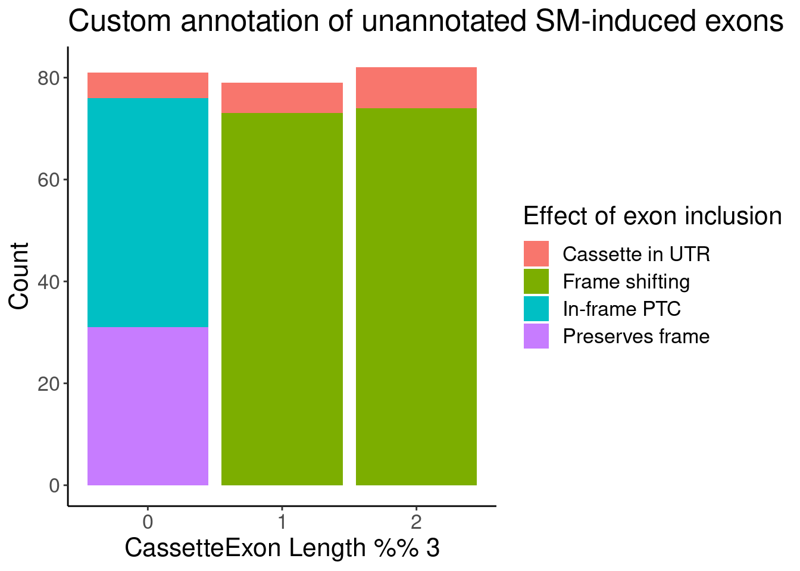

20230504_SmallMoleculeFig
2023-05-04
Last updated: 2023-05-10
Checks: 6 1
Knit directory:
ChromatinSplicingQTLs/analysis/
This reproducible R Markdown analysis was created with workflowr (version 1.7.0). The Checks tab describes the reproducibility checks that were applied when the results were created. The Past versions tab lists the development history.
The R Markdown is untracked by Git. To know which version of the R
Markdown file created these results, you’ll want to first commit it to
the Git repo. If you’re still working on the analysis, you can ignore
this warning. When you’re finished, you can run
wflow_publish to commit the R Markdown file and build the
HTML.
Great job! The global environment was empty. Objects defined in the global environment can affect the analysis in your R Markdown file in unknown ways. For reproduciblity it’s best to always run the code in an empty environment.
The command set.seed(20191126) was run prior to running
the code in the R Markdown file. Setting a seed ensures that any results
that rely on randomness, e.g. subsampling or permutations, are
reproducible.
Great job! Recording the operating system, R version, and package versions is critical for reproducibility.
Nice! There were no cached chunks for this analysis, so you can be confident that you successfully produced the results during this run.
Great job! Using relative paths to the files within your workflowr project makes it easier to run your code on other machines.
Great! You are using Git for version control. Tracking code development and connecting the code version to the results is critical for reproducibility.
The results in this page were generated with repository version 1fbb2dc. See the Past versions tab to see a history of the changes made to the R Markdown and HTML files.
Note that you need to be careful to ensure that all relevant files for
the analysis have been committed to Git prior to generating the results
(you can use wflow_publish or
wflow_git_commit). workflowr only checks the R Markdown
file, but you know if there are other scripts or data files that it
depends on. Below is the status of the Git repository when the results
were generated:
Ignored files:
Ignored: .DS_Store
Ignored: .Rhistory
Ignored: .Rproj.user/
Ignored: analysis/.Rhistory
Ignored: analysis/figure/
Ignored: code/.DS_Store
Ignored: code/.RData
Ignored: code/._report.html
Ignored: code/.ipynb_checkpoints/
Ignored: code/.snakemake/
Ignored: code/APA_Processing/
Ignored: code/Alignments/
Ignored: code/ChromHMM/
Ignored: code/ENCODE/
Ignored: code/ExpressionAnalysis/
Ignored: code/ExtractPhenotypeBedByGenotype.py
Ignored: code/FastqFastp/
Ignored: code/FastqFastpSE/
Ignored: code/FastqSE/
Ignored: code/FineMapping/
Ignored: code/Genotypes/
Ignored: code/H3K36me3_CutAndTag.pdf
Ignored: code/IntronSlopes/
Ignored: code/LR.bed
Ignored: code/LR.seq.bed
Ignored: code/LongReads/
Ignored: code/Metaplots/
Ignored: code/Misc/
Ignored: code/MiscCountTables/
Ignored: code/Multiqc/
Ignored: code/Multiqc_chRNA/
Ignored: code/NonCodingRNA/
Ignored: code/NonCodingRNA_annotation/
Ignored: code/PairwisePi1Traits.P.all.txt.gz
Ignored: code/PeakCalling/
Ignored: code/Phenotypes/
Ignored: code/PlotGruberQTLs/
Ignored: code/PlotQTLs/
Ignored: code/ProCapAnalysis/
Ignored: code/QC/
Ignored: code/QTL_SNP_Enrichment/
Ignored: code/QTLs/
Ignored: code/RPKM_tables/
Ignored: code/ReadLengthMapExperiment/
Ignored: code/ReadLengthMapExperimentResults/
Ignored: code/ReadLengthMapExperimentSpliceCounts/
Ignored: code/ReferenceGenome/
Ignored: code/Rplots.pdf
Ignored: code/Session.vim
Ignored: code/SmallMolecule/
Ignored: code/SplicingAnalysis/
Ignored: code/TODO
Ignored: code/Tehranchi/
Ignored: code/alias/
Ignored: code/bigwigs/
Ignored: code/bigwigs_FromNonWASPFilteredReads/
Ignored: code/config/.DS_Store
Ignored: code/config/._.DS_Store
Ignored: code/config/.ipynb_checkpoints/
Ignored: code/config/config.local.yaml
Ignored: code/dag.pdf
Ignored: code/dag.png
Ignored: code/dag.svg
Ignored: code/data/
Ignored: code/debug.ipynb
Ignored: code/debug_python.ipynb
Ignored: code/deepTools/
Ignored: code/featureCounts/
Ignored: code/featureCountsBasicGtf/
Ignored: code/genome_config.yaml
Ignored: code/gwas_summary_stats/
Ignored: code/hyprcoloc/
Ignored: code/igv_session.xml
Ignored: code/isoseqbams/
Ignored: code/log
Ignored: code/logs/
Ignored: code/notebooks/.ipynb_checkpoints/
Ignored: code/pi1/
Ignored: code/polyA.Splicing.Subset_YRI.NominalPassForColoc.bed.bgz
Ignored: code/rules/.ipynb_checkpoints/
Ignored: code/rules/OldRules/
Ignored: code/rules/notebooks/
Ignored: code/salmontest/
Ignored: code/scratch/
Ignored: code/scripts/.SmallMolecule_chRNA_DE.R.swp
Ignored: code/scripts/.ipynb_checkpoints/
Ignored: code/scripts/GTFtools_0.8.0/
Ignored: code/scripts/__pycache__/
Ignored: code/scripts/liftOverBedpe/liftOverBedpe.py
Ignored: code/snakemake.dryrun.log
Ignored: code/snakemake.log
Ignored: code/snakemake.sbatch.log
Ignored: code/snakemake_profiles/slurm/__pycache__/
Ignored: code/test.introns.bed
Ignored: code/test.introns2.bed
Ignored: code/test.log
Ignored: code/tracks.xml
Ignored: data/.DS_Store
Ignored: data/GWAS_catalog_summary_stats_sources/._list_gwas_summary_statistics_6_Apr_2022-10.csv
Ignored: data/GWAS_catalog_summary_stats_sources/._list_gwas_summary_statistics_6_Apr_2022-11.csv
Ignored: data/GWAS_catalog_summary_stats_sources/._list_gwas_summary_statistics_6_Apr_2022-2.csv
Ignored: data/GWAS_catalog_summary_stats_sources/._list_gwas_summary_statistics_6_Apr_2022-3.csv
Ignored: data/GWAS_catalog_summary_stats_sources/._list_gwas_summary_statistics_6_Apr_2022-4.csv
Ignored: data/GWAS_catalog_summary_stats_sources/._list_gwas_summary_statistics_6_Apr_2022-5.csv
Ignored: data/GWAS_catalog_summary_stats_sources/._list_gwas_summary_statistics_6_Apr_2022-6.csv
Ignored: data/GWAS_catalog_summary_stats_sources/._list_gwas_summary_statistics_6_Apr_2022-7.csv
Ignored: data/GWAS_catalog_summary_stats_sources/._list_gwas_summary_statistics_6_Apr_2022-8.csv
Ignored: data/GWAS_catalog_summary_stats_sources/._list_gwas_summary_statistics_6_Apr_2022.csv
Ignored: data/Metaplots/.DS_Store
Untracked files:
Untracked: analysis/20230504_SmallMoleculeFig.Rmd
Untracked: code/scripts/SmallMolecule_GetFlankingExonsInBasicTranscriptsToTranslate.R
Untracked: data/Tau_gene_V8.csv.gz
Untracked: data/mart_export.txt.gz
Untracked: data/tissue_category_rna_brain_Tissue.tsv.gz
Unstaged changes:
Modified: analysis/20221102_PlotStuffForYang.Rmd
Modified: analysis/20230324_MakeFigs.Rmd
Modified: code/rules/ProcessSmallMoleculeData.smk
Modified: code/scripts/SmallMoleculeParseCassetteExons.py
Modified: code/scripts/SmallMolecule_chRNA_DE.R
Note that any generated files, e.g. HTML, png, CSS, etc., are not included in this status report because it is ok for generated content to have uncommitted changes.
There are no past versions. Publish this analysis with
wflow_publish() to start tracking its development.
knitr::opts_chunk$set(echo = TRUE, warning = F, message = F)
library(tidyverse)── Attaching packages ─────────────────────────────────────── tidyverse 1.3.1 ──✔ ggplot2 3.3.6 ✔ purrr 0.3.4
✔ tibble 3.1.7 ✔ dplyr 1.0.9
✔ tidyr 1.2.0 ✔ stringr 1.4.0
✔ readr 2.1.2 ✔ forcats 0.5.1── Conflicts ────────────────────────────────────────── tidyverse_conflicts() ──
✖ dplyr::filter() masks stats::filter()
✖ dplyr::lag() masks stats::lag()library(RColorBrewer)
library(data.table)
Attaching package: 'data.table'The following objects are masked from 'package:dplyr':
between, first, lastThe following object is masked from 'package:purrr':
transposelibrary(edgeR)Loading required package: limmalibrary(readxl)
library(qvalue)
# Set theme
theme_set(
theme_classic() +
theme(text=element_text(size=16, family="Helvetica")))
# I use layer a lot, to rotate long x-axis labels
Rotate_x_labels <- theme(axis.text.x = element_text(angle = 45, vjust = 1, hjust=1))
#test plot
ggplot(mtcars, aes(x=mpg, y=cyl)) +
geom_point()
IntronAnnotatins <- read_tsv("../data/IntronAnnotationsFromYang.tsv.gz") %>%
mutate(chrom = str_remove_all(chrom, "chr")) %>%
mutate(Intron = paste(chrom, start, end, sep=":")) %>%
filter(!str_detect(SuperAnnotation, "NoncodingGene"))
small.molecule.dat.genes <- read_tsv("../code/SmallMolecule/FitModels/polyA_genes.tsv.gz")
# Model fits using PSI using intron trios
small.molecule.dat.introns <- read_tsv("../code/SmallMolecule/FitModels/polyA_GAGTIntrons_asPSI.tsv.gz") %>%
mutate(Intron = str_replace(junc, "^chr(.+?):[+-]$", "\\1")) %>%
left_join(IntronAnnotatins)
ClusterSignificance <- Sys.glob("../code/SmallMolecule/leafcutter/ds/chRNA_risdiplam_*_cluster_significance.txt") %>%
setNames(str_replace(., "../code/SmallMolecule/leafcutter/ds/chRNA_risdiplam_(.+?)_cluster_significance.txt", "\\1")) %>%
lapply(read_tsv) %>%
bind_rows(.id="dose.nM")
EffectSizes <- Sys.glob("../code/SmallMolecule/leafcutter/ds/chRNA_risdiplam_*_effect_sizes.txt") %>%
setNames(str_replace(., "../code/SmallMolecule/leafcutter/ds/chRNA_risdiplam_(.+?)_effect_sizes.txt", "\\1")) %>%
lapply(read_tsv) %>%
bind_rows(.id="dose.nM") %>%
mutate(cluster = str_replace(intron, "^(.+?):.+?:.+?(:clu_.+$)", "\\1\\2"))
chRNA.splicing.dat <- inner_join(EffectSizes, ClusterSignificance)
Translated.GAGT_CassetteExons <- read_tsv("../code/SmallMolecule/CassetteExons/ExonsToTranslate.Translated.tsv.gz") %>%
dplyr::select(-chrom, -Strand) %>%
mutate(TranslationDiff = str_length(IncludedTranslation) - str_length(SkippedTranslation)) %>%
mutate(InFrame = str_length(IncludedTranslation)-str_length(SkippedTranslation)==(ExonStop_Cassette-ExonStart_Cassette)/3) %>%
mutate(ExonRemainder = (ExonStop_Cassette - ExonStart_Cassette)%%3) %>%
mutate(Effect = case_when(
is.na(InFrame) ~ "Cassette in UTR",
InFrame ~ "Preserves frame",
ExonRemainder %in% c(1,2) ~ "Frame shifting",
InFrame == F ~ "In-frame PTC",
))
PolyA.SplicingEffects.Annotationed <- small.molecule.dat.introns %>%
left_join(Translated.GAGT_CassetteExons, by=c("junc"="GAGTInt")) %>%
filter(!(is.na(gene.x) & is.na(gene.y))) %>%
mutate(NewAnnotation = case_when(
SuperAnnotation %in% c("AnnotatedJunc_UnproductiveCodingGene", "AnnotatedJunc_ProductiveCodingGene") ~ SuperAnnotation,
TRUE ~ Effect
)) %>%
filter(!is.na(NewAnnotation)) %>%
mutate(gene = case_when(
SuperAnnotation %in% c("AnnotatedJunc_UnproductiveCodingGene", "AnnotatedJunc_ProductiveCodingGene") ~ gene.x,
TRUE ~ gene.y
)) %>%
dplyr::select(-gene.x, -gene.y)
PolyA.SplicingEffects.Annotationed %>%
distinct(junc, .keep_all=T) %>%
filter(!str_detect(NewAnnotation, "Annotated")) %>%
count(ExonRemainder, NewAnnotation) %>%
ggplot(aes(x=ExonRemainder, y=n, fill=NewAnnotation)) +
geom_col(position='stack') +
labs(x="CassetteExon Length %% 3", y="Count", fill="Effect of exon inclusion", title="Custom annotation of unannotated SM-induced exons")
small.molecule.dat.genes %>% distinct(Geneid) %>% nrow()[1] 10348MergedEstimatesFromModel <- right_join(
PolyA.SplicingEffects.Annotationed %>%
filter(str_detect(param, "Pred")) %>%
mutate(gene = str_replace(gene, "(^.+?)\\..+?$", "\\1")),
small.molecule.dat.genes %>%
filter(str_detect(param, "Pred")) %>%
mutate(gene = str_replace(Geneid, "(^.+?)\\..+?$", "\\1")),
by=c("gene", "param"),
suffix=c(".splicing", ".expression")
) %>%
separate(param, into=c("Dummy", "dose.nM"), convert=T, sep="_") %>%
dplyr::select(-Dummy)Now calculate difference between PSI at dose!=0 and dose==0..
MergedEstimatesFromModel.deltas <-
inner_join(
MergedEstimatesFromModel %>%
filter(dose.nM == 0) %>%
dplyr::select(Estimate.splicing, SE.splicing, Estimate.expression, SE.expression, junc, gene),
MergedEstimatesFromModel %>%
filter(!dose.nM == 0),
by=c("junc", "gene"),
suffix=c(".untreated", ".treated")
) %>%
mutate(Estimate.Expression.FC = Estimate.expression.treated - Estimate.expression.untreated) %>%
mutate(Estimate.Splicing.deltaPSI = Estimate.splicing.treated - Estimate.splicing.untreated) %>%
mutate(Estimate.Splicing.FC = log2(Estimate.splicing.treated / Estimate.splicing.untreated))Now plot using the old annotations (filling in unproductive whenever one doesn’t exist, since all of that’s how they would be annotated using Yang and my previous scheme anyway)
MergedEstimatesFromModel.deltas %>%
replace_na(list(SuperAnnotation = "NewlyAnnotated as\nUnnnotatedJunc_UnproductiveCodingGene")) %>%
mutate(PlottingGroup = str_replace_all(SuperAnnotation, "_", " ")) %>%
ggplot(aes(x=Estimate.Splicing.deltaPSI, y=Estimate.Expression.FC)) +
geom_hline(yintercept = 0, linetype='dashed') +
geom_point() +
facet_grid(PlottingGroup~dose.nM, labeller = label_wrap_gen()) +
# facet_grid(~dose.nM) +
theme_bw() +
labs(x="Splicing change\nDeltaPSI of GAGT intron", y="Expression change\nlog2FC of host gene") +
theme(strip.text.y = element_text(size = 8))MergedEstimatesFromModel.deltas %>%
filter(!is.na(NewAnnotation)) %>%
mutate(PlottingGroup = str_replace_all(NewAnnotation, "_", " ")) %>%
ggplot(aes(x=Estimate.Splicing.deltaPSI, y=Estimate.Expression.FC)) +
geom_hline(yintercept = 0, linetype='dashed') +
geom_point() +
facet_grid(PlottingGroup~dose.nM, labeller = label_wrap_gen()) +
# facet_grid(~dose.nM) +
theme_bw() +
labs(x="Splicing change\nDeltaPSI of GAGT intron", y="Expression change\nlog2FC of host gene") +
theme(strip.text.y = element_text(size = 8))Plot as ecdf at high dose…
MergedEstimatesFromModel.deltas$NewAnnotation %>% unique()[1] "AnnotatedJunc_UnproductiveCodingGene"
[2] "Frame shifting"
[3] "Cassette in UTR"
[4] "Preserves frame"
[5] "In-frame PTC"
[6] "AnnotatedJunc_ProductiveCodingGene"
[7] NA MergedEstimatesFromModel.deltas %>%
filter(dose.nM==3160) %>%
filter(!is.na(NewAnnotation)) %>%
filter(NewAnnotation!="Cassette in UTR") %>%
mutate(PlottingGroup = recode(NewAnnotation, "Preserves frame"="UnannotatedJunc_ProductiveCodingGene", "Frame shifting"="UnannotatedJunc_UnproductiveCodingGene", "In-frame PTC"="UnannotatedJunc_UnproductiveCodingGene")) %>%
ggplot(aes(x=Estimate.Expression.FC, color=PlottingGroup)) +
geom_vline(xintercept = 0, linetype='dashed') +
stat_ecdf() +
# geom_density() +
theme_bw() +
labs(x="Expression FC of host gene", y="ecdf")ColorKey <- c("UnannotatedJunc_ProductiveCodingGene"="#a6cee3", "AnnotatedJunc_ProductiveCodingGene"="#1f78b4", "UnannotatedJunc_UnproductiveCodingGene"="#fb9a99", "AnnotatedJunc_UnproductiveCodingGene"="#e31a1c")
MergedEstimatesFromModel.deltas %>%
filter(dose.nM==3160) %>%
filter(Estimate.Splicing.deltaPSI > 0.1) %>%
filter(!is.na(NewAnnotation)) %>%
filter(NewAnnotation!="Cassette in UTR") %>%
mutate(PlottingGroup = recode(NewAnnotation, "Preserves frame"="UnannotatedJunc_ProductiveCodingGene", "Frame shifting"="UnannotatedJunc_UnproductiveCodingGene", "In-frame PTC"="UnannotatedJunc_UnproductiveCodingGene")) %>%
mutate(PlottingGroup, factor(PlottingGroup, levels=c("AnnotatedJunc_ProductiveCodingGene", "UnannotatedJunc_ProductiveCodingGene", "AnnotatedJunc_UnproductiveCodingGene", "UnannotatedJunc_UnproductiveCodingGene"))) %>%
ggplot(aes(y=Estimate.Expression.FC, x=PlottingGroup, color=PlottingGroup)) +
geom_boxplot(outlier.shape=NA) +
geom_jitter(width=0.25) +
theme_bw() +
scale_color_manual(values=ColorKey) +
labs(y="Host gene log2FC") +
Rotate_x_labelsMergedEstimatesFromModel.deltas %>%
filter(dose.nM==3160) %>%
filter(Estimate.Splicing.deltaPSI > 0.1) %>%
filter(!is.na(NewAnnotation)) %>%
filter(NewAnnotation!="Cassette in UTR") %>%
mutate(PlottingGroup = recode(NewAnnotation, "Preserves frame"="Productive", "Frame shifting"="Unproductive", "In-frame PTC"="Unproductive", "AnnotatedJunc_UnproductiveCodingGene"="Unproductive", "AnnotatedJunc_ProductiveCodingGene"="Productive")) %>%
mutate(IsAnnotated = str_detect(NewAnnotation, "Annotated")) %>%
# distinct(gene, .keep_all=T) %>%
# mutate(PlottingGroup, factor(PlottingGroup, levels=c("AnnotatedJunc_ProductiveCodingGene", "UnannotatedJunc_ProductiveCodingGene", "AnnotatedJunc_UnproductiveCodingGene", "UnannotatedJunc_UnproductiveCodingGene"))) %>%
ggplot(aes(y=Estimate.Expression.FC, x=PlottingGroup, color=PlottingGroup, alpha=IsAnnotated, group=interaction(IsAnnotated, PlottingGroup))) +
geom_boxplot(outlier.shape=NA) +
geom_point(position=position_jitterdodge(jitter.width=0.125)) +
theme_bw() +
scale_color_manual(values=c("Productive"="#1f78b4", "Unproductive"="#e31a1c")) +
labs(y="Host gene log2FC") +
Rotate_x_labels
Great, now I think we should look at the same gene changes in chromatin.
chRNA.DE.dat <- read_tsv("../code/SmallMolecule/chRNA/DE.results.tsv.gz")
chRNA.DE.dat %>%
mutate(Sig = FDR<0.1) %>%
count(risdiplam_conc, Sig)# A tibble: 4 × 3
risdiplam_conc Sig n
<dbl> <lgl> <int>
1 100 FALSE 15970
2 100 TRUE 8
3 3160 FALSE 12788
4 3160 TRUE 3190chRNA.DE.dat %>%
ggplot(aes(x=logFC, color=FDR<0.1)) +
stat_ecdf() +
facet_wrap(~risdiplam_conc)chRNA.DE.dat %>%
count()# A tibble: 1 × 1
n
<int>
1 31956MergedEstimatesFromModel.deltas.WithPolyA.And.chRNA <- MergedEstimatesFromModel.deltas %>%
filter(dose.nM==3160) %>%
# filter(Estimate.Splicing.deltaPSI > 0.1) %>%
filter(!is.na(NewAnnotation)) %>%
filter(NewAnnotation!="Cassette in UTR") %>%
mutate(PlottingGroup = recode(NewAnnotation, "Preserves frame"="Productive", "Frame shifting"="Unproductive", "In-frame PTC"="Unproductive", "AnnotatedJunc_UnproductiveCodingGene"="Unproductive", "AnnotatedJunc_ProductiveCodingGene"="Productive")) %>%
mutate(IsAnnotated = str_detect(NewAnnotation, "Annotated")) %>%
dplyr::select(gene, Estimate.Expression.FC, PlottingGroup, IsAnnotated, Intron) %>%
left_join(
chRNA.DE.dat %>%
filter(risdiplam_conc==3160) %>%
separate(Geneid, into=c("gene", "symbol"), sep="_") %>%
dplyr::select(gene, logFC) %>%
mutate(gene = str_replace(gene, "(^E.+?)\\..+?$", "\\1")),
by="gene"
)
MergedEstimatesFromModel.deltas.WithPolyA.And.chRNA %>%
gather(key="source", value="log2FC", logFC, Estimate.Expression.FC) %>%
mutate(source=recode(source, "logFC"="chRNA", "Estimate.Expression.FC"="polyA")) %>%
ggplot(aes(y=log2FC, x=PlottingGroup, color=PlottingGroup, alpha=IsAnnotated, group=interaction(IsAnnotated, PlottingGroup))) +
geom_boxplot(outlier.shape=NA) +
geom_point(position=position_jitterdodge(jitter.width=0.125)) +
theme_bw() +
scale_color_manual(values=c("Productive"="#1f78b4", "Unproductive"="#e31a1c")) +
facet_wrap(~source) +
labs(y="Host gene log2FC") +
Rotate_x_labelsOk, maybe later I will figure out why the chRNA effects sizes are positive in both productive and non-productive group… Porbably has something to do with library normalization.
Next I want to make some figures related to the splicing druggable genome. This paper has a nice supplemental table of small molecule “druggable” proteins that I can use to compare… I expect the splicing-modified genes to be not particularly enriched in any caetgory, and be more or less totally independent with the list of “druggable” proteins… The only hypothesis I do have (which I will test below) about what genes are more druggable by splicing-mediated expression effects are that longer genes (with more introns/exons, more potential for cryptic sites) will be enriched.
I think to do this, it will be uesful to make a list of splicing-mediated-risdiplam-effected genes, then an expression-matched list of control genes.
SplicingDruggableGenes <- MergedEstimatesFromModel.deltas.WithPolyA.And.chRNA %>%
filter(PlottingGroup == "Unproductive") %>%
# filter(Estimate.Expression.FC < -0.5) %>%
distinct(gene, .keep_all=T)
nrow(SplicingDruggableGenes)[1] 203Now let’s get an expression-matched list of control genes.
exons <- read_tsv("../code/ReferenceGenome/Annotations/GTFTools_BasicAnnotations/gencode.v34.chromasomal.exons.sorted.bed", col_names=c("chrom", "start", "stop", "gene_transcript", "score", "strand"))
transcripts_to_genes <- exons %>%
distinct(gene_transcript) %>%
separate(gene_transcript, into=c("gene", "transcript"), sep="_") %>%
mutate(gene = str_replace(gene, "(^.+?)\\..+?$", "\\1"))
Expression.table.transcripts <- read_tsv("../code/SmallMolecule/salmon.DMSO.merged.txt")
Expression.table.genes <- Expression.table.transcripts %>%
inner_join(transcripts_to_genes, by=c("Name"="transcript")) %>%
# filter(gene == "ENSG00000213225")
# add_count(gene) %>%
# filter(n==2)
group_by(gene) %>%
summarise_at(vars(contains("DMSO")), sum) %>%
gather("sample", "TPM", -gene) %>%
group_by(gene) %>%
summarise(medianTPM = median(TPM))
hist(log2(Expression.table.genes$medianTPM))Expression.table.genes %>%
filter(gene == "ENSG00000111640")# A tibble: 1 × 2
gene medianTPM
<chr> <dbl>
1 ENSG00000111640 4502.Expression.tidyForMatchingGenes <- Expression.table.genes %>%
mutate(IsSplicingDruggable = gene %in% SplicingDruggableGenes$gene) %>%
arrange(medianTPM) %>%
mutate(LaggingGeneGroup = lag(IsSplicingDruggable)) %>%
mutate(LeadingGeneGroup = lead(IsSplicingDruggable)) %>%
ungroup()
Merged.WithExpressionMatchedControlGenes <-
bind_rows(
Expression.tidyForMatchingGenes %>%
filter(IsSplicingDruggable) %>%
mutate(Group = "SplicingPerturbed"),
Expression.tidyForMatchingGenes %>%
filter(!IsSplicingDruggable & LaggingGeneGroup) %>%
mutate(Group = "SplicingUnperturbedControl"),
Expression.tidyForMatchingGenes %>%
filter(!IsSplicingDruggable & LeadingGeneGroup) %>%
mutate(Group = "SplicingUnperturbedControl"),
) %>%
dplyr::select(gene, medianTPM, Group)
Merged.WithExpressionMatchedControlGenes %>%
ggplot(aes(medianTPM)) +
stat_ecdf() +
scale_x_continuous(trans='log10') +
facet_wrap(~Group)Now download the supplemental table from This paper…
url1<-'https://www.ncbi.nlm.nih.gov/pmc/articles/PMC6321762/bin/NIHMS80906-supplement-Table_S1.xlsx'
p1f <- tempfile()
download.file(url1, p1f, mode="wb")
p1<-read_excel(path = p1f, sheet = 1)
head(p1)# A tibble: 6 × 12
ensembl_gene_id druggability_tier hgnc_names chr_b37 start_b37 end_b37 strand
<chr> <chr> <chr> <chr> <dbl> <dbl> <dbl>
1 ENSG00000000938 Tier 1 FGR 1 27938575 2.80e7 -1
2 ENSG00000001626 Tier 1 CFTR 7 117105838 1.17e8 1
3 ENSG00000001630 Tier 1 CYP51A1 7 91741465 9.18e7 -1
4 ENSG00000002549 Tier 1 LAP3 4 17578815 1.76e7 1
5 ENSG00000004468 Tier 1 CD38 4 15779898 1.59e7 1
6 ENSG00000004478 Tier 1 FKBP4 12 2904119 2.91e6 1
# … with 5 more variables: description <chr>, no_of_gwas_regions <dbl>,
# small_mol_druggable <chr>, bio_druggable <chr>, adme_gene <chr>Ok, now let’s add the list of genes in here as well…
CodingGenes <- read_tsv("../data/mart_export.txt.gz") %>%
distinct(`Gene stable ID`) %>%
dplyr::select(gene = "Gene stable ID")
GeneCategories <- p1 %>%
filter(small_mol_druggable=="Y") %>%
left_join(Expression.table.genes, by=c("ensembl_gene_id"="gene")) %>%
dplyr::select(Group=druggability_tier, gene=ensembl_gene_id, medianTPM) %>%
bind_rows(
Merged.WithExpressionMatchedControlGenes,
Expression.table.genes %>%
mutate(Group = "Whole protein coding genome")
) %>%
filter(gene %in% CodingGenes$gene)Now let’s inspect for differences in features of genes…
GeneCategories %>%
ggplot(aes(x=medianTPM, color=Group)) +
scale_x_continuous(trans='log10') +
stat_ecdf()Ok, perhaps its unsurprising that the splicing perturbed genes (as identified in LCLs) have higher expression (as measured in LCLs) than the other druggable gene groups.
Now let’s look at number of exons and or gene length (proxy for how likely gene is by chance to contain cryptic splice sites)
Will used number of exons and gene length of highest expressed transcript.
TopTranscriptPerGene <- Expression.table.transcripts %>%
# # summarise_at(vars(contains("DMSO")), sum) %>%
gather("sample", "TPM", -Name) %>%
group_by(Name) %>%
summarise(medianTPM = median(TPM)) %>%
inner_join(transcripts_to_genes, by=c("Name"="transcript")) %>%
group_by(gene) %>%
filter(medianTPM == max(medianTPM)) %>%
ungroup() %>%
distinct(gene, .keep_all=T)
NumExonsAndLength <- exons %>%
group_by(gene_transcript) %>%
summarise(NumExons = n(),
Min = min(start),
Max = max(stop)) %>%
mutate(GeneLength = Max - Min) %>%
separate(gene_transcript, into=c("gene", "transcript"), sep="_") %>%
filter(transcript %in% TopTranscriptPerGene$Name) %>%
mutate(gene = str_replace(gene, "(^.+?)\\..+?$", "\\1")) %>%
dplyr::select(-Min, -Max)
NumExonsAndLength %>%
filter(gene %in% CodingGenes$gene) %>%
ggplot(aes(x=GeneLength)) +
stat_ecdf() +
coord_cartesian(xlim=c(1E3, 1E6)) +
scale_x_continuous(trans='log10') +
annotation_logticks() +
theme_bw()
GeneCategories %>%
left_join(NumExonsAndLength) %>%
filter(!Group %in% c("Tier 2", "Tier 3A", "Tier 3B")) %>%
gather(key="Feature", value="value", NumExons, GeneLength, medianTPM) %>%
ggplot(aes(x=value, color=Group)) +
stat_ecdf() +
scale_x_continuous(trans='log10') +
annotation_logticks() +
facet_wrap(~Feature, scales = "free") +
labs(y="ecdf", color="Druggability gene group")Next want to check enrichment of Tier1 (drugged genes), SplicingPerturbed, SplicingPerturbed control in different gene categories (ie kinase, nuclear receptors,GPCRs etc). I will define the categories based on GO categories, as retrieved from msigdb. I expected the Tier1 genes to be enriched in (non-olfactory) GPCRs, nuclear hormone receptors, kinases, and ion channels, while I expect Splicing perturbed to show no such enrichment.
library(biomaRt)
ensembl = useMart("ensembl",dataset="hsapiens_gene_ensembl")
ensembl_to_symbols <- getBM(attributes= c("ensembl_gene_id","hgnc_symbol"),mart=ensembl)
#Manually copy paste links from MsigDB
go=c(
"GO:0015075"="https://www.gsea-msigdb.org/gsea/msigdb/human/download_geneset.jsp?geneSetName=GOMF_MONOATOMIC_ION_TRANSMEMBRANE_TRANSPORTER_ACTIVITY&fileType=grp",
"GO:0004930"="https://www.gsea-msigdb.org/gsea/msigdb/human/download_geneset.jsp?geneSetName=GOMF_G_PROTEIN_COUPLED_RECEPTOR_ACTIVITY&fileType=grp",
"GO:0004984"="https://www.gsea-msigdb.org/gsea/msigdb/human/download_geneset.jsp?geneSetName=GOMF_OLFACTORY_RECEPTOR_ACTIVITY&fileType=grp",
"GO:0004879"="https://www.gsea-msigdb.org/gsea/msigdb/human/download_geneset.jsp?geneSetName=GOMF_NUCLEAR_RECEPTOR_ACTIVITY&fileType=grp",
"GO:0016301"="https://www.gsea-msigdb.org/gsea/msigdb/human/download_geneset.jsp?geneSetName=GOMF_KINASE_ACTIVITY&fileType=grp",
"GO:0003700"="https://www.gsea-msigdb.org/gsea/msigdb/human/download_geneset.jsp?geneSetName=GOMF_DNA_BINDING_TRANSCRIPTION_FACTOR_ACTIVITY&fileType=grp")
GO.genes.of.interest <- lapply(go, read.table, skip=2, col.names=c("hgnc_symbol")) %>%
bind_rows(.id="GO") %>%
mutate(GO_Name = recode(GO, !!!go)) %>%
mutate(GO_Name = str_replace(GO_Name, ".+?geneSetName=(.+?)&fileType=grp$", "\\1")) %>%
left_join(ensembl_to_symbols)
GO.genes.of.interest %>%
distinct(hgnc_symbol, GO_Name) %>%
count(GO_Name) GO_Name n
1 GOMF_DNA_BINDING_TRANSCRIPTION_FACTOR_ACTIVITY 1240
2 GOMF_G_PROTEIN_COUPLED_RECEPTOR_ACTIVITY 845
3 GOMF_KINASE_ACTIVITY 738
4 GOMF_MONOATOMIC_ION_TRANSMEMBRANE_TRANSPORTER_ACTIVITY 710
5 GOMF_NUCLEAR_RECEPTOR_ACTIVITY 46
6 GOMF_OLFACTORY_RECEPTOR_ACTIVITY 342GPCRs <- GO.genes.of.interest %>%
filter(GO_Name == "GOMF_G_PROTEIN_COUPLED_RECEPTOR_ACTIVITY") %>%
pull(hgnc_symbol) %>% unique() %>%
setdiff(
GO.genes.of.interest %>%
filter(GO_Name == "GOMF_OLFACTORY_RECEPTOR_ACTIVITY") %>%
pull(hgnc_symbol) %>% unique()
)Ok, now let’s do the fisher/hypergeometric tests to look for enrichment gene set enrichment in Tier1 small molecule druggable genes, risdiplam-affected, and risdiplam-unaffected, using whole genome background as a control.
brain.genes <- read_tsv("../data/tissue_category_rna_brain_Tissue.tsv.gz")
NumExonsAndLength %>%
filter(gene %in% CodingGenes$gene) %>%
mutate(BrainEnriched_HumanProteinAtlas = gene %in% brain.genes$Ensembl) %>%
ggplot(aes(x=GeneLength, color=BrainEnriched_HumanProteinAtlas)) +
stat_ecdf() +
coord_cartesian(xlim=c(1E3, 1E6)) +
scale_x_continuous(trans='log10') +
annotation_logticks() +
theme_bw() +
labs(y="ecdf")GO.genes.of.interest %>%
filter(ensembl_gene_id %in% CodingGenes$gene) %>%
count(GO_Name) GO_Name n
1 GOMF_DNA_BINDING_TRANSCRIPTION_FACTOR_ACTIVITY 1319
2 GOMF_G_PROTEIN_COUPLED_RECEPTOR_ACTIVITY 1004
3 GOMF_KINASE_ACTIVITY 792
4 GOMF_MONOATOMIC_ION_TRANSMEMBRANE_TRANSPORTER_ACTIVITY 764
5 GOMF_NUCLEAR_RECEPTOR_ACTIVITY 51
6 GOMF_OLFACTORY_RECEPTOR_ACTIVITY 444GO.genes.of.interest.totest <-
bind_rows(
# filter out olfactor GPCRs from GPCR group
GO.genes.of.interest %>%
filter(ensembl_gene_id %in% CodingGenes$gene) %>%
filter(!GO_Name=="GOMF_OLFACTORY_RECEPTOR_ACTIVITY") %>%
filter(!(GO_Name=="GOMF_G_PROTEIN_COUPLED_RECEPTOR_ACTIVITY" & !hgnc_symbol %in% GPCRs)),
NumExonsAndLength %>%
filter(gene %in% CodingGenes$gene) %>%
mutate(GO_Name = case_when(
GeneLength > 1E3 & GeneLength < 1E4 ~ "1-10kb",
GeneLength > 1E4 & GeneLength < 5E4 ~ "10-50kb",
GeneLength > 5E4 & GeneLength < 1E5 ~ "50-100kb",
GeneLength > 1E5 ~ ">100kb",
TRUE ~ NA_character_
)) %>%
filter(!is.na(GO_Name)) %>%
dplyr::select(ensembl_gene_id=gene, GO_Name),
brain.genes %>%
dplyr::select(ensembl_gene_id=Ensembl) %>%
mutate(GO_Name = "BrainEnriched_HumanProteinAtlas") %>%
filter(ensembl_gene_id %in% CodingGenes$gene)
)
GO_Categories <- GO.genes.of.interest.totest %>%
pull(GO_Name) %>% unique()
count(GO.genes.of.interest.totest, GO_Name) GO_Name n
1 1-10kb 4988
2 10-50kb 7745
3 50-100kb 2615
4 >100kb 2701
5 BrainEnriched_HumanProteinAtlas 2637
6 GOMF_DNA_BINDING_TRANSCRIPTION_FACTOR_ACTIVITY 1319
7 GOMF_G_PROTEIN_COUPLED_RECEPTOR_ACTIVITY 579
8 GOMF_KINASE_ACTIVITY 792
9 GOMF_MONOATOMIC_ION_TRANSMEMBRANE_TRANSPORTER_ACTIVITY 764
10 GOMF_NUCLEAR_RECEPTOR_ACTIVITY 51DruggabilityCategories <- GeneCategories %>%
filter(!Group=="Whole protein coding genome") %>% pull(Group) %>% unique()
DruggabilityCategories[1] "Tier 1" "Tier 2"
[3] "Tier 3A" "Tier 3B"
[5] "SplicingPerturbed" "SplicingUnperturbedControl"GeneCategories.totest <- GeneCategories %>%
sample_frac() %>%
group_by(Group) %>%
mutate(n = row_number()) %>%
ungroup() %>%
filter(!Group == "Tier 1" | (Group == "Tier 1" & n <= 116))
count(GeneCategories.totest, Group)# A tibble: 7 × 2
Group n
<chr> <int>
1 SplicingPerturbed 203
2 SplicingUnperturbedControl 371
3 Tier 1 116
4 Tier 2 648
5 Tier 3A 67
6 Tier 3B 516
7 Whole protein coding genome 18484library(broom)
results <- list()
for (DruggabilitySetName in DruggabilityCategories){
for (GO_CategoryName in GO_Categories){
print(paste(DruggabilitySetName, GO_CategoryName))
DruggabilitySet <- GeneCategories.totest %>%
filter(Group==DruggabilitySetName) %>% pull(gene)
GO_CategorySet <- GO.genes.of.interest.totest %>%
filter(GO_Name==GO_CategoryName) %>% pull(ensembl_gene_id)
test.results <- data.frame(gene=CodingGenes$gene) %>%
mutate(IsDruggable = gene %in% DruggabilitySet, IsInGO.Set = gene %in% GO_CategorySet) %>%
mutate(IsDruggable = factor(IsDruggable),
IsInGO.Set = factor(IsInGO.Set)) %>%
count(IsDruggable, IsInGO.Set, .drop=F) %>%
pivot_wider(names_from="IsInGO.Set", values_from="n") %>%
column_to_rownames("IsDruggable") %>%
fisher.test() %>% glance()
results[[paste(DruggabilitySetName, GO_CategoryName, sep=";")]] <- test.results %>%
as.data.frame()
}
}[1] "Tier 1 GOMF_MONOATOMIC_ION_TRANSMEMBRANE_TRANSPORTER_ACTIVITY"
[1] "Tier 1 GOMF_G_PROTEIN_COUPLED_RECEPTOR_ACTIVITY"
[1] "Tier 1 GOMF_NUCLEAR_RECEPTOR_ACTIVITY"
[1] "Tier 1 GOMF_KINASE_ACTIVITY"
[1] "Tier 1 GOMF_DNA_BINDING_TRANSCRIPTION_FACTOR_ACTIVITY"
[1] "Tier 1 1-10kb"
[1] "Tier 1 10-50kb"
[1] "Tier 1 50-100kb"
[1] "Tier 1 >100kb"
[1] "Tier 1 BrainEnriched_HumanProteinAtlas"
[1] "Tier 2 GOMF_MONOATOMIC_ION_TRANSMEMBRANE_TRANSPORTER_ACTIVITY"
[1] "Tier 2 GOMF_G_PROTEIN_COUPLED_RECEPTOR_ACTIVITY"
[1] "Tier 2 GOMF_NUCLEAR_RECEPTOR_ACTIVITY"
[1] "Tier 2 GOMF_KINASE_ACTIVITY"
[1] "Tier 2 GOMF_DNA_BINDING_TRANSCRIPTION_FACTOR_ACTIVITY"
[1] "Tier 2 1-10kb"
[1] "Tier 2 10-50kb"
[1] "Tier 2 50-100kb"
[1] "Tier 2 >100kb"
[1] "Tier 2 BrainEnriched_HumanProteinAtlas"
[1] "Tier 3A GOMF_MONOATOMIC_ION_TRANSMEMBRANE_TRANSPORTER_ACTIVITY"
[1] "Tier 3A GOMF_G_PROTEIN_COUPLED_RECEPTOR_ACTIVITY"
[1] "Tier 3A GOMF_NUCLEAR_RECEPTOR_ACTIVITY"
[1] "Tier 3A GOMF_KINASE_ACTIVITY"
[1] "Tier 3A GOMF_DNA_BINDING_TRANSCRIPTION_FACTOR_ACTIVITY"
[1] "Tier 3A 1-10kb"
[1] "Tier 3A 10-50kb"
[1] "Tier 3A 50-100kb"
[1] "Tier 3A >100kb"
[1] "Tier 3A BrainEnriched_HumanProteinAtlas"
[1] "Tier 3B GOMF_MONOATOMIC_ION_TRANSMEMBRANE_TRANSPORTER_ACTIVITY"
[1] "Tier 3B GOMF_G_PROTEIN_COUPLED_RECEPTOR_ACTIVITY"
[1] "Tier 3B GOMF_NUCLEAR_RECEPTOR_ACTIVITY"
[1] "Tier 3B GOMF_KINASE_ACTIVITY"
[1] "Tier 3B GOMF_DNA_BINDING_TRANSCRIPTION_FACTOR_ACTIVITY"
[1] "Tier 3B 1-10kb"
[1] "Tier 3B 10-50kb"
[1] "Tier 3B 50-100kb"
[1] "Tier 3B >100kb"
[1] "Tier 3B BrainEnriched_HumanProteinAtlas"
[1] "SplicingPerturbed GOMF_MONOATOMIC_ION_TRANSMEMBRANE_TRANSPORTER_ACTIVITY"
[1] "SplicingPerturbed GOMF_G_PROTEIN_COUPLED_RECEPTOR_ACTIVITY"
[1] "SplicingPerturbed GOMF_NUCLEAR_RECEPTOR_ACTIVITY"
[1] "SplicingPerturbed GOMF_KINASE_ACTIVITY"
[1] "SplicingPerturbed GOMF_DNA_BINDING_TRANSCRIPTION_FACTOR_ACTIVITY"
[1] "SplicingPerturbed 1-10kb"
[1] "SplicingPerturbed 10-50kb"
[1] "SplicingPerturbed 50-100kb"
[1] "SplicingPerturbed >100kb"
[1] "SplicingPerturbed BrainEnriched_HumanProteinAtlas"
[1] "SplicingUnperturbedControl GOMF_MONOATOMIC_ION_TRANSMEMBRANE_TRANSPORTER_ACTIVITY"
[1] "SplicingUnperturbedControl GOMF_G_PROTEIN_COUPLED_RECEPTOR_ACTIVITY"
[1] "SplicingUnperturbedControl GOMF_NUCLEAR_RECEPTOR_ACTIVITY"
[1] "SplicingUnperturbedControl GOMF_KINASE_ACTIVITY"
[1] "SplicingUnperturbedControl GOMF_DNA_BINDING_TRANSCRIPTION_FACTOR_ACTIVITY"
[1] "SplicingUnperturbedControl 1-10kb"
[1] "SplicingUnperturbedControl 10-50kb"
[1] "SplicingUnperturbedControl 50-100kb"
[1] "SplicingUnperturbedControl >100kb"
[1] "SplicingUnperturbedControl BrainEnriched_HumanProteinAtlas"results %>%
bind_rows(.id="Druggability_GO") %>%
separate(Druggability_GO, into=c("Druggability", "GO category"), sep=";") %>%
mutate(GO = recode(`GO category`, "GOMF_KINASE_ACTIVITY"="Kinases", "GOMF_NUCLEAR_RECEPTOR_ACTIVITY"="Nuc receptors", "GOMF_G_PROTEIN_COUPLED_RECEPTOR_ACTIVITY"="GPCRs", "GOMF_MONOATOMIC_ION_TRANSMEMBRANE_TRANSPORTER_ACTIVITY"="Ion transporters", "GOMF_DNA_BINDING_TRANSCRIPTION_FACTOR_ACTIVITY"="TFs")) %>%
# pull(GO) %>% unique()
mutate(GO = factor(GO, levels=c("1-10kb", "10-50kb", "50-100kb", ">100kb", "GPCRs", "Nuc receptors", "Kinases", "Ion transporters", "TFs", "BrainEnriched_HumanProteinAtlas"))) %>%
filter(Druggability %in% c("Tier 1", "SplicingPerturbed", "SplicingUnperturbedControl")) %>%
ggplot(aes(x=GO, y=log2(estimate), fill=GO)) +
geom_col() +
geom_errorbar(aes(ymin=log2(conf.low), ymax=log2(conf.high)), width=.2) +
geom_hline(yintercept = 0) +
Rotate_x_labels +
# scale_y_continuous(trans="log2") +
facet_wrap(~Druggability) +
labs(y="Enrichment; log2(OddsRatio)", x="Gene category", fill="Gene category")So long genes are over-represented. And from previous literature we know long genes are more expressed in brain, but let’s double check that from GTEx data…
url <- "https://storage.googleapis.com/gtex_analysis_v8/rna_seq_data/GTEx_Analysis_2017-06-05_v8_RNASeQCv1.1.9_gene_median_tpm.gct.gz"
zip_file <- tempfile(fileext = ".gz")
download.file(url, zip_file, mode = "wb")
df <- read_tsv(zip_file, skip=2) %>%
mutate(gene = str_replace(Name, "(^.+?)\\..+?$", "\\1")) %>%
filter(gene %in% CodingGenes$gene) %>%
inner_join(NumExonsAndLength, by=c("gene"))
df %>%
dplyr::select(GeneLength, 3:56) %>%
cor(method='s') %>% as.data.frame() %>%
dplyr::select(GeneLength) %>%
rownames_to_column("tissue") %>%
filter(!tissue=="GeneLength") %>%
mutate(tissue = fct_reorder(tissue, GeneLength, .desc=T)) %>%
mutate(IsBrain = if_else(str_detect(tissue, "Brain"), "Brain", "Non-brain")) %>%
ggplot(aes(x=tissue, fill=IsBrain, y=GeneLength)) +
geom_col() +
Rotate_x_labels +
labs(y="expression:length spearman cor")Ok, so despite that I can clearly see that brain genes are enriched in long genes, and that the brain-specific genes from human protein atlas also skew long, they are not enriched in the short list of risdiplam targets. Now let’s make a more final version of this figure, by excluding some of the less interesting results, and coloring and labelling things nicer…
GO.genes.of.interest.totest <-
bind_rows(
# filter out olfactor GPCRs from GPCR group
GO.genes.of.interest %>%
filter(ensembl_gene_id %in% CodingGenes$gene) %>%
filter(!GO_Name=="GOMF_OLFACTORY_RECEPTOR_ACTIVITY") %>%
filter(!(GO_Name=="GOMF_G_PROTEIN_COUPLED_RECEPTOR_ACTIVITY" & !hgnc_symbol %in% GPCRs)),
NumExonsAndLength %>%
filter(gene %in% CodingGenes$gene) %>%
# mutate(GO_Name = cut_number(GeneLength, 5, ordered_result=T)) %>%
mutate(GO_Name = factor(ntile(GeneLength, 4))) %>%
# mutate(GO_Name = cut(GeneLength, breaks=c(-Inf,1E3, 1E4, 1E5, Inf), include.lowest=T)) %>%
filter(!is.na(GO_Name)) %>%
dplyr::select(ensembl_gene_id=gene, GO_Name)
)
GO_Categories <- GO.genes.of.interest.totest %>%
pull(GO_Name) %>% unique()
count(GO.genes.of.interest.totest, GO_Name) GO_Name n
1 1 4621
2 2 4621
3 3 4621
4 4 4621
5 GOMF_DNA_BINDING_TRANSCRIPTION_FACTOR_ACTIVITY 1319
6 GOMF_G_PROTEIN_COUPLED_RECEPTOR_ACTIVITY 579
7 GOMF_KINASE_ACTIVITY 792
8 GOMF_MONOATOMIC_ION_TRANSMEMBRANE_TRANSPORTER_ACTIVITY 764
9 GOMF_NUCLEAR_RECEPTOR_ACTIVITY 51DruggabilityCategories <- GeneCategories %>%
filter(!Group=="Whole protein coding genome") %>% pull(Group) %>% unique()
DruggabilityCategories[1] "Tier 1" "Tier 2"
[3] "Tier 3A" "Tier 3B"
[5] "SplicingPerturbed" "SplicingUnperturbedControl"GeneCategories.totest <- GeneCategories %>%
sample_frac() %>%
group_by(Group) %>%
mutate(n = row_number()) %>%
ungroup()
# filter(!Group == "Tier 1" | (Group == "Tier 1" & n <= 116))
count(GeneCategories.totest, Group)# A tibble: 7 × 2
Group n
<chr> <int>
1 SplicingPerturbed 203
2 SplicingUnperturbedControl 371
3 Tier 1 1059
4 Tier 2 648
5 Tier 3A 67
6 Tier 3B 516
7 Whole protein coding genome 18484NumExonsAndLength %>%
filter(gene %in% CodingGenes$gene) %>%
mutate(N = cut_number(GeneLength, 4)) %>%
distinct(N)# A tibble: 4 × 1
N
<fct>
1 (8.21e+03,2.25e+04]
2 (2.25e+04,5.88e+04]
3 (5.88e+04,2.3e+06]
4 [117,8.21e+03] results <- list()
for (DruggabilitySetName in DruggabilityCategories){
for (GO_CategoryName in GO_Categories){
print(paste(DruggabilitySetName, GO_CategoryName))
DruggabilitySet <- GeneCategories.totest %>%
filter(Group==DruggabilitySetName) %>% pull(gene)
GO_CategorySet <- GO.genes.of.interest.totest %>%
filter(GO_Name==GO_CategoryName) %>% pull(ensembl_gene_id)
test.results <- data.frame(gene=CodingGenes$gene) %>%
mutate(IsDruggable = gene %in% DruggabilitySet, IsInGO.Set = gene %in% GO_CategorySet) %>%
mutate(IsDruggable = factor(IsDruggable),
IsInGO.Set = factor(IsInGO.Set)) %>%
count(IsDruggable, IsInGO.Set, .drop=F) %>%
pivot_wider(names_from="IsInGO.Set", values_from="n") %>%
column_to_rownames("IsDruggable") %>%
fisher.test() %>% glance()
results[[paste(DruggabilitySetName, GO_CategoryName, sep=";")]] <- test.results %>%
as.data.frame()
}
}[1] "Tier 1 GOMF_MONOATOMIC_ION_TRANSMEMBRANE_TRANSPORTER_ACTIVITY"
[1] "Tier 1 GOMF_G_PROTEIN_COUPLED_RECEPTOR_ACTIVITY"
[1] "Tier 1 GOMF_NUCLEAR_RECEPTOR_ACTIVITY"
[1] "Tier 1 GOMF_KINASE_ACTIVITY"
[1] "Tier 1 GOMF_DNA_BINDING_TRANSCRIPTION_FACTOR_ACTIVITY"
[1] "Tier 1 2"
[1] "Tier 1 3"
[1] "Tier 1 4"
[1] "Tier 1 1"
[1] "Tier 2 GOMF_MONOATOMIC_ION_TRANSMEMBRANE_TRANSPORTER_ACTIVITY"
[1] "Tier 2 GOMF_G_PROTEIN_COUPLED_RECEPTOR_ACTIVITY"
[1] "Tier 2 GOMF_NUCLEAR_RECEPTOR_ACTIVITY"
[1] "Tier 2 GOMF_KINASE_ACTIVITY"
[1] "Tier 2 GOMF_DNA_BINDING_TRANSCRIPTION_FACTOR_ACTIVITY"
[1] "Tier 2 2"
[1] "Tier 2 3"
[1] "Tier 2 4"
[1] "Tier 2 1"
[1] "Tier 3A GOMF_MONOATOMIC_ION_TRANSMEMBRANE_TRANSPORTER_ACTIVITY"
[1] "Tier 3A GOMF_G_PROTEIN_COUPLED_RECEPTOR_ACTIVITY"
[1] "Tier 3A GOMF_NUCLEAR_RECEPTOR_ACTIVITY"
[1] "Tier 3A GOMF_KINASE_ACTIVITY"
[1] "Tier 3A GOMF_DNA_BINDING_TRANSCRIPTION_FACTOR_ACTIVITY"
[1] "Tier 3A 2"
[1] "Tier 3A 3"
[1] "Tier 3A 4"
[1] "Tier 3A 1"
[1] "Tier 3B GOMF_MONOATOMIC_ION_TRANSMEMBRANE_TRANSPORTER_ACTIVITY"
[1] "Tier 3B GOMF_G_PROTEIN_COUPLED_RECEPTOR_ACTIVITY"
[1] "Tier 3B GOMF_NUCLEAR_RECEPTOR_ACTIVITY"
[1] "Tier 3B GOMF_KINASE_ACTIVITY"
[1] "Tier 3B GOMF_DNA_BINDING_TRANSCRIPTION_FACTOR_ACTIVITY"
[1] "Tier 3B 2"
[1] "Tier 3B 3"
[1] "Tier 3B 4"
[1] "Tier 3B 1"
[1] "SplicingPerturbed GOMF_MONOATOMIC_ION_TRANSMEMBRANE_TRANSPORTER_ACTIVITY"
[1] "SplicingPerturbed GOMF_G_PROTEIN_COUPLED_RECEPTOR_ACTIVITY"
[1] "SplicingPerturbed GOMF_NUCLEAR_RECEPTOR_ACTIVITY"
[1] "SplicingPerturbed GOMF_KINASE_ACTIVITY"
[1] "SplicingPerturbed GOMF_DNA_BINDING_TRANSCRIPTION_FACTOR_ACTIVITY"
[1] "SplicingPerturbed 2"
[1] "SplicingPerturbed 3"
[1] "SplicingPerturbed 4"
[1] "SplicingPerturbed 1"
[1] "SplicingUnperturbedControl GOMF_MONOATOMIC_ION_TRANSMEMBRANE_TRANSPORTER_ACTIVITY"
[1] "SplicingUnperturbedControl GOMF_G_PROTEIN_COUPLED_RECEPTOR_ACTIVITY"
[1] "SplicingUnperturbedControl GOMF_NUCLEAR_RECEPTOR_ACTIVITY"
[1] "SplicingUnperturbedControl GOMF_KINASE_ACTIVITY"
[1] "SplicingUnperturbedControl GOMF_DNA_BINDING_TRANSCRIPTION_FACTOR_ACTIVITY"
[1] "SplicingUnperturbedControl 2"
[1] "SplicingUnperturbedControl 3"
[1] "SplicingUnperturbedControl 4"
[1] "SplicingUnperturbedControl 1"results %>%
bind_rows(.id="Druggability_GO") %>%
separate(Druggability_GO, into=c("Druggability", "GO category"), sep=";") %>%
mutate(GO = recode(`GO category`, "GOMF_KINASE_ACTIVITY"="Kinases", "GOMF_NUCLEAR_RECEPTOR_ACTIVITY"="Nuc receptors", "GOMF_G_PROTEIN_COUPLED_RECEPTOR_ACTIVITY"="GPCRs", "GOMF_MONOATOMIC_ION_TRANSMEMBRANE_TRANSPORTER_ACTIVITY"="Ion transporters", "GOMF_DNA_BINDING_TRANSCRIPTION_FACTOR_ACTIVITY"="TFs")) %>%
# filter(!GO=="TFs") %>%
# pull(GO) %>% unique()
# mutate(GO = factor(GO, levels=c("1-10kb", "10-50kb", "50-100kb", ">100kb", "GPCRs", "Nuc receptors", "Kinases", "Ion transporters", "TFs", "BrainEnriched_HumanProteinAtlas"))) %>%
filter(Druggability %in% c("Tier 1", "SplicingPerturbed")) %>%
mutate(Druggability = recode(Druggability, "Tier 1"="1059 targets of approved small molecules", "SplicingPerturbed"="116 Risdiplam-induced NMD targets")) %>%
ggplot(aes(x=GO, y=log2(estimate), fill=GO)) +
geom_col() +
geom_errorbar(aes(ymin=log2(conf.low), ymax=log2(conf.high)), width=.2) +
geom_hline(yintercept = 0) +
Rotate_x_labels +
scale_fill_manual(
values=c(
"1"="#b2e2e2",
"2"="#66c2a4",
"3"="#2ca25f",
"4"="#006d2c",
"GPCRs"="#ffffb3",
"Ion transporters"="#bebada",
"Kinases"="#fb8072",
"Nuc receptors"="#80b1d3",
"TFs"="#fdb462"),
labels=c(
"1"="Q1 gene length; <8.2kb",
"2"="Q2 gene length; 8-23kb",
"3"="Q3 gene length; 23-59kb",
"4"="Q4 gene length; >59kb",
"GPCRs"="GPCRs",
"Ion transporters",
"Kinases",
"Nuc receptors"="Nuclear receptors",
"TFs"="Transcription factors"
)) +
# scale_y_continuous(trans="log2") +
facet_wrap(~Druggability, labeller = label_wrap_gen(25)) +
labs(y="Enrichment; log2(OddsRatio)", x="Gene category", fill="Gene category")Now let’s do another version of this analysis but with a larger category of risdiplam-sensitive genes… For example, just identify the potential post-txnal events.
polyA.GeneEffects <- small.molecule.dat.genes %>%
filter(str_detect(param, "Pred")) %>%
mutate(gene = str_replace(Geneid, "(^.+?)\\..+?$", "\\1")) %>%
separate(param, into=c("Dummy", "dose.nM"), convert=T, sep="_") %>%
dplyr::select(-Dummy)
SplicingPerturbed <- SplicingDruggableGenes$gene
GeneEffects.Changes <-
inner_join(
polyA.GeneEffects %>%
filter(dose.nM == 0) %>%
dplyr::select(-dose.nM, -Geneid),
polyA.GeneEffects %>%
filter(dose.nM == 3160) %>%
dplyr::select(-dose.nM),
by=c("gene"),
suffix=c(".expression.untreated", ".expression.treated")
) %>%
mutate(Estimate.Expression.FC = Estimate.expression.treated - Estimate.expression.untreated) %>%
mutate(IsGeneEffected = gene %in% SplicingPerturbed ) %>%
left_join(
chRNA.DE.dat %>%
filter(risdiplam_conc==3160) %>%
separate(Geneid, into=c("gene", "symbol"), sep="_") %>%
mutate(gene = str_replace(gene, "(^E.+?)\\..+?$", "\\1")),
by="gene"
) %>%
mutate(z = Estimate.Expression.FC/sqrt((SE.expression.treated + SE.expression.untreated))) %>%
mutate(abs.z = abs(z))
#For the life of me I can't figure out why this didn't work in a pipe. So I'm assigning the column this way
GeneEffects.Changes$polyA.P <- 2*pnorm(GeneEffects.Changes$abs.z, lower.tail = F)
GeneEffects.Changes <- GeneEffects.Changes %>%
mutate(polyA.FDR = qvalue(polyA.P)$qvalues)
hist(GeneEffects.Changes$polyA.P)GeneEffects.Changes %>%
ggplot(aes(x=Estimate.Expression.FC, y=logFC)) +
geom_point(alpha=0.1) +
theme_bw()GeneEffects.Changes %>%
arrange(IsGeneEffected) %>%
ggplot(aes(x=Estimate.Expression.FC, y=logFC, color=IsGeneEffected)) +
geom_point(alpha=0.5) +
theme_bw()GeneEffects.Changes %>%
arrange(IsGeneEffected) %>%
ggplot(aes(x=Estimate.Expression.FC, y=logFC, color=polyA.FDR<0.1)) +
geom_point(alpha=0.5) +
theme_bw()GeneEffects.Changes %>%
arrange(IsGeneEffected) %>%
ggplot(aes(x=Estimate.Expression.FC, y=logFC, color=FDR<0.1)) +
geom_point(alpha=0.5) +
theme_bw()It’s already obvious that there are more down-regulated genes that upregulated genes.
Let’s do something simple to find the polyA-specific effects…
Like it must be significant, with FC<0.5 in polyA, and not significant in chRNA or significant in oppossite direction.
TypesOfChangesClassification <- GeneEffects.Changes %>%
mutate(SignificantInPolyA = polyA.FDR<0.1 & abs(Estimate.Expression.FC)>0.5) %>%
mutate(SignificantIn_chRNA = FDR<0.05) %>%
mutate(SameSignChanges = sign(Estimate.Expression.FC)==sign(logFC)) %>%
mutate(IsPolyASpecific = SignificantInPolyA & !(SignificantIn_chRNA & SameSignChanges))
TypesOfChangesClassification %>%
filter(IsGeneEffected) %>%
count(SignificantInPolyA)# A tibble: 2 × 2
SignificantInPolyA n
<lgl> <int>
1 FALSE 101
2 TRUE 102TypesOfChangesClassification %>%
ggplot(aes(x=Estimate.Expression.FC, y=logFC, color=IsPolyASpecific)) +
geom_point(alpha=0.1) +
geom_point(data = . %>%
filter(IsGeneEffected),
color='black') +
theme_bw()LargerSetOfRisdiplamEffectedGenes <- TypesOfChangesClassification %>%
filter(IsPolyASpecific)Ok now let’s remake that plot with this expanded set of effects…
GO.genes.of.interest.totest <-
bind_rows(
# filter out olfactor GPCRs from GPCR group
GO.genes.of.interest %>%
filter(ensembl_gene_id %in% CodingGenes$gene) %>%
filter(!GO_Name=="GOMF_OLFACTORY_RECEPTOR_ACTIVITY") %>%
filter(!(GO_Name=="GOMF_G_PROTEIN_COUPLED_RECEPTOR_ACTIVITY" & !hgnc_symbol %in% GPCRs)),
NumExonsAndLength %>%
filter(gene %in% CodingGenes$gene) %>%
# mutate(GO_Name = cut_number(GeneLength, 5, ordered_result=T)) %>%
mutate(GO_Name = factor(ntile(GeneLength, 4))) %>%
# mutate(GO_Name = cut(GeneLength, breaks=c(-Inf,1E3, 1E4, 1E5, Inf), include.lowest=T)) %>%
filter(!is.na(GO_Name)) %>%
dplyr::select(ensembl_gene_id=gene, GO_Name)
)
GO_Categories <- GO.genes.of.interest.totest %>%
pull(GO_Name) %>% unique()
count(GO.genes.of.interest.totest, GO_Name) GO_Name n
1 1 4621
2 2 4621
3 3 4621
4 4 4621
5 GOMF_DNA_BINDING_TRANSCRIPTION_FACTOR_ACTIVITY 1319
6 GOMF_G_PROTEIN_COUPLED_RECEPTOR_ACTIVITY 579
7 GOMF_KINASE_ACTIVITY 792
8 GOMF_MONOATOMIC_ION_TRANSMEMBRANE_TRANSPORTER_ACTIVITY 764
9 GOMF_NUCLEAR_RECEPTOR_ACTIVITY 51DruggabilityCategories.totest.df <- GeneCategories %>%
sample_frac() %>%
group_by(Group) %>%
mutate(n = row_number()) %>%
ungroup() %>%
# filter(!Group == "Tier 1" | (Group == "Tier 1" & n <= 116))
bind_rows(
LargerSetOfRisdiplamEffectedGenes %>%
dplyr::select(gene) %>%
filter(gene %in% CodingGenes$gene) %>%
mutate(Group = "Larger set of risdiplam-effected")
)
count(DruggabilityCategories.totest.df, Group)# A tibble: 8 × 2
Group n
<chr> <int>
1 Larger set of risdiplam-effected 1114
2 SplicingPerturbed 203
3 SplicingUnperturbedControl 371
4 Tier 1 1059
5 Tier 2 648
6 Tier 3A 67
7 Tier 3B 516
8 Whole protein coding genome 18484DruggabilityCategories <- DruggabilityCategories.totest.df %>%
filter(!Group=="Whole protein coding genome") %>% pull(Group) %>% unique()
DruggabilityCategories[1] "Tier 2" "Tier 3B"
[3] "Tier 1" "SplicingUnperturbedControl"
[5] "SplicingPerturbed" "Tier 3A"
[7] "Larger set of risdiplam-effected"NumExonsAndLength %>%
filter(gene %in% CodingGenes$gene) %>%
mutate(N = cut_number(GeneLength, 4)) %>%
distinct(N)# A tibble: 4 × 1
N
<fct>
1 (8.21e+03,2.25e+04]
2 (2.25e+04,5.88e+04]
3 (5.88e+04,2.3e+06]
4 [117,8.21e+03] results <- list()
for (DruggabilitySetName in DruggabilityCategories){
for (GO_CategoryName in GO_Categories){
print(paste(DruggabilitySetName, GO_CategoryName))
DruggabilitySet <- DruggabilityCategories.totest.df %>%
filter(Group==DruggabilitySetName) %>% pull(gene)
GO_CategorySet <- GO.genes.of.interest.totest %>%
filter(GO_Name==GO_CategoryName) %>% pull(ensembl_gene_id)
test.results <- data.frame(gene=CodingGenes$gene) %>%
mutate(IsDruggable = gene %in% DruggabilitySet, IsInGO.Set = gene %in% GO_CategorySet) %>%
mutate(IsDruggable = factor(IsDruggable),
IsInGO.Set = factor(IsInGO.Set)) %>%
count(IsDruggable, IsInGO.Set, .drop=F) %>%
pivot_wider(names_from="IsInGO.Set", values_from="n") %>%
column_to_rownames("IsDruggable") %>%
fisher.test() %>% glance()
results[[paste(DruggabilitySetName, GO_CategoryName, sep=";")]] <- test.results %>%
as.data.frame()
}
}[1] "Tier 2 GOMF_MONOATOMIC_ION_TRANSMEMBRANE_TRANSPORTER_ACTIVITY"
[1] "Tier 2 GOMF_G_PROTEIN_COUPLED_RECEPTOR_ACTIVITY"
[1] "Tier 2 GOMF_NUCLEAR_RECEPTOR_ACTIVITY"
[1] "Tier 2 GOMF_KINASE_ACTIVITY"
[1] "Tier 2 GOMF_DNA_BINDING_TRANSCRIPTION_FACTOR_ACTIVITY"
[1] "Tier 2 2"
[1] "Tier 2 3"
[1] "Tier 2 4"
[1] "Tier 2 1"
[1] "Tier 3B GOMF_MONOATOMIC_ION_TRANSMEMBRANE_TRANSPORTER_ACTIVITY"
[1] "Tier 3B GOMF_G_PROTEIN_COUPLED_RECEPTOR_ACTIVITY"
[1] "Tier 3B GOMF_NUCLEAR_RECEPTOR_ACTIVITY"
[1] "Tier 3B GOMF_KINASE_ACTIVITY"
[1] "Tier 3B GOMF_DNA_BINDING_TRANSCRIPTION_FACTOR_ACTIVITY"
[1] "Tier 3B 2"
[1] "Tier 3B 3"
[1] "Tier 3B 4"
[1] "Tier 3B 1"
[1] "Tier 1 GOMF_MONOATOMIC_ION_TRANSMEMBRANE_TRANSPORTER_ACTIVITY"
[1] "Tier 1 GOMF_G_PROTEIN_COUPLED_RECEPTOR_ACTIVITY"
[1] "Tier 1 GOMF_NUCLEAR_RECEPTOR_ACTIVITY"
[1] "Tier 1 GOMF_KINASE_ACTIVITY"
[1] "Tier 1 GOMF_DNA_BINDING_TRANSCRIPTION_FACTOR_ACTIVITY"
[1] "Tier 1 2"
[1] "Tier 1 3"
[1] "Tier 1 4"
[1] "Tier 1 1"
[1] "SplicingUnperturbedControl GOMF_MONOATOMIC_ION_TRANSMEMBRANE_TRANSPORTER_ACTIVITY"
[1] "SplicingUnperturbedControl GOMF_G_PROTEIN_COUPLED_RECEPTOR_ACTIVITY"
[1] "SplicingUnperturbedControl GOMF_NUCLEAR_RECEPTOR_ACTIVITY"
[1] "SplicingUnperturbedControl GOMF_KINASE_ACTIVITY"
[1] "SplicingUnperturbedControl GOMF_DNA_BINDING_TRANSCRIPTION_FACTOR_ACTIVITY"
[1] "SplicingUnperturbedControl 2"
[1] "SplicingUnperturbedControl 3"
[1] "SplicingUnperturbedControl 4"
[1] "SplicingUnperturbedControl 1"
[1] "SplicingPerturbed GOMF_MONOATOMIC_ION_TRANSMEMBRANE_TRANSPORTER_ACTIVITY"
[1] "SplicingPerturbed GOMF_G_PROTEIN_COUPLED_RECEPTOR_ACTIVITY"
[1] "SplicingPerturbed GOMF_NUCLEAR_RECEPTOR_ACTIVITY"
[1] "SplicingPerturbed GOMF_KINASE_ACTIVITY"
[1] "SplicingPerturbed GOMF_DNA_BINDING_TRANSCRIPTION_FACTOR_ACTIVITY"
[1] "SplicingPerturbed 2"
[1] "SplicingPerturbed 3"
[1] "SplicingPerturbed 4"
[1] "SplicingPerturbed 1"
[1] "Tier 3A GOMF_MONOATOMIC_ION_TRANSMEMBRANE_TRANSPORTER_ACTIVITY"
[1] "Tier 3A GOMF_G_PROTEIN_COUPLED_RECEPTOR_ACTIVITY"
[1] "Tier 3A GOMF_NUCLEAR_RECEPTOR_ACTIVITY"
[1] "Tier 3A GOMF_KINASE_ACTIVITY"
[1] "Tier 3A GOMF_DNA_BINDING_TRANSCRIPTION_FACTOR_ACTIVITY"
[1] "Tier 3A 2"
[1] "Tier 3A 3"
[1] "Tier 3A 4"
[1] "Tier 3A 1"
[1] "Larger set of risdiplam-effected GOMF_MONOATOMIC_ION_TRANSMEMBRANE_TRANSPORTER_ACTIVITY"
[1] "Larger set of risdiplam-effected GOMF_G_PROTEIN_COUPLED_RECEPTOR_ACTIVITY"
[1] "Larger set of risdiplam-effected GOMF_NUCLEAR_RECEPTOR_ACTIVITY"
[1] "Larger set of risdiplam-effected GOMF_KINASE_ACTIVITY"
[1] "Larger set of risdiplam-effected GOMF_DNA_BINDING_TRANSCRIPTION_FACTOR_ACTIVITY"
[1] "Larger set of risdiplam-effected 2"
[1] "Larger set of risdiplam-effected 3"
[1] "Larger set of risdiplam-effected 4"
[1] "Larger set of risdiplam-effected 1"results %>%
bind_rows(.id="Druggability_GO") %>%
separate(Druggability_GO, into=c("Druggability", "GO category"), sep=";") %>%
mutate(GO = recode(`GO category`, "GOMF_KINASE_ACTIVITY"="Kinases", "GOMF_NUCLEAR_RECEPTOR_ACTIVITY"="Nuc receptors", "GOMF_G_PROTEIN_COUPLED_RECEPTOR_ACTIVITY"="GPCRs", "GOMF_MONOATOMIC_ION_TRANSMEMBRANE_TRANSPORTER_ACTIVITY"="Ion transporters", "GOMF_DNA_BINDING_TRANSCRIPTION_FACTOR_ACTIVITY"="TFs")) %>%
# filter(!GO=="TFs") %>%
# pull(GO) %>% unique()
# mutate(GO = factor(GO, levels=c("1-10kb", "10-50kb", "50-100kb", ">100kb", "GPCRs", "Nuc receptors", "Kinases", "Ion transporters", "TFs", "BrainEnriched_HumanProteinAtlas"))) %>%
filter(Druggability %in% c("Tier 1", "SplicingPerturbed", "Larger set of risdiplam-effected")) %>%
mutate(Druggability = recode(Druggability, "Tier 1"="1059 targets of approved small molecules", "SplicingPerturbed"="116 Risdiplam-induced NMD targets", "Larger set of risdiplam-effected"="Larger set")) %>%
ggplot(aes(x=GO, y=log2(estimate), fill=GO)) +
geom_col() +
geom_errorbar(aes(ymin=log2(conf.low), ymax=log2(conf.high)), width=.2) +
geom_hline(yintercept = 0) +
Rotate_x_labels +
scale_fill_manual(
values=c(
"1"="#b2e2e2",
"2"="#66c2a4",
"3"="#2ca25f",
"4"="#006d2c",
"GPCRs"="#ffffb3",
"Ion transporters"="#bebada",
"Kinases"="#fb8072",
"Nuc receptors"="#80b1d3",
"TFs"="#fdb462"),
labels=c(
"1"="Q1 gene length; <8.2kb",
"2"="Q2 gene length; 8-23kb",
"3"="Q3 gene length; 23-59kb",
"4"="Q4 gene length; >59kb",
"GPCRs"="GPCRs",
"Ion transporters",
"Kinases",
"Nuc receptors"="Nuclear receptors",
"TFs"="Transcription factors"
)) +
# scale_y_continuous(trans="log2") +
facet_wrap(~Druggability, labeller = label_wrap_gen(25)) +
labs(y="Enrichment; log2(OddsRatio)", x="Gene category", fill="Gene category")## Making final figs…
Ok so I’ve done enough exploring I know in detail what I want to plot:
- Plot of induction of GAGT introns specifically in chRNA and polyA (main)
- A barplots of expression effect in chRNA and polyA, grouped by whether induced exons are productive or unproductive. (main)
- barplot of induced exons and proportion which are “poison” and why. (Supplement, possibly main)
- The druggability gene enrichment barplots comparing genes w/ ris-induced poison exons (not based on expression effects) (main)
- the druggability gene enrichment barplot comparing genes w/ post-txnal downregulation (Supplement)
- the polyA vs chRNA gene expression effect scatter, highlighting various categories (Supplement)
- polyA volcano at high dose, at low dose (Supplement)
- the splicing vs expression beta faceted by predicted splicing effect (ie frame shift, in-frame PTC, frame-preserving, etc) (Supplement)
sessionInfo()R version 4.2.0 (2022-04-22)
Platform: x86_64-pc-linux-gnu (64-bit)
Running under: CentOS Linux 7 (Core)
Matrix products: default
BLAS/LAPACK: /software/openblas-0.3.13-el7-x86_64/lib/libopenblas_haswellp-r0.3.13.so
locale:
[1] LC_CTYPE=en_US.UTF-8 LC_NUMERIC=C LC_TIME=C
[4] LC_COLLATE=C LC_MONETARY=C LC_MESSAGES=C
[7] LC_PAPER=C LC_NAME=C LC_ADDRESS=C
[10] LC_TELEPHONE=C LC_MEASUREMENT=C LC_IDENTIFICATION=C
attached base packages:
[1] stats graphics grDevices utils datasets methods base
other attached packages:
[1] broom_0.8.0 biomaRt_2.52.0 qvalue_2.28.0 readxl_1.4.0
[5] edgeR_3.38.4 limma_3.52.4 data.table_1.14.2 RColorBrewer_1.1-3
[9] forcats_0.5.1 stringr_1.4.0 dplyr_1.0.9 purrr_0.3.4
[13] readr_2.1.2 tidyr_1.2.0 tibble_3.1.7 ggplot2_3.3.6
[17] tidyverse_1.3.1
loaded via a namespace (and not attached):
[1] bitops_1.0-7 fs_1.5.2 lubridate_1.8.0
[4] bit64_4.0.5 filelock_1.0.2 progress_1.2.2
[7] httr_1.4.3 GenomeInfoDb_1.32.2 rprojroot_2.0.3
[10] tools_4.2.0 backports_1.4.1 bslib_0.3.1
[13] utf8_1.2.2 R6_2.5.1 BiocGenerics_0.42.0
[16] DBI_1.1.2 colorspace_2.0-3 withr_2.5.0
[19] prettyunits_1.1.1 tidyselect_1.1.2 curl_4.3.2
[22] bit_4.0.4 compiler_4.2.0 git2r_0.30.1
[25] Biobase_2.56.0 cli_3.3.0 rvest_1.0.2
[28] xml2_1.3.3 labeling_0.4.2 sass_0.4.1
[31] scales_1.2.0 rappdirs_0.3.3 digest_0.6.29
[34] rmarkdown_2.14 XVector_0.36.0 pkgconfig_2.0.3
[37] htmltools_0.5.2 dbplyr_2.1.1 fastmap_1.1.0
[40] highr_0.9 rlang_1.0.2 rstudioapi_0.13
[43] RSQLite_2.2.14 jquerylib_0.1.4 farver_2.1.0
[46] generics_0.1.2 jsonlite_1.8.0 vroom_1.5.7
[49] RCurl_1.98-1.7 magrittr_2.0.3 GenomeInfoDbData_1.2.8
[52] S4Vectors_0.34.0 Rcpp_1.0.8.3 munsell_0.5.0
[55] fansi_1.0.3 lifecycle_1.0.1 stringi_1.7.6
[58] yaml_2.3.5 zlibbioc_1.42.0 BiocFileCache_2.4.0
[61] plyr_1.8.7 grid_4.2.0 blob_1.2.3
[64] parallel_4.2.0 promises_1.2.0.1 crayon_1.5.1
[67] lattice_0.20-45 Biostrings_2.64.0 haven_2.5.0
[70] splines_4.2.0 KEGGREST_1.36.2 hms_1.1.1
[73] locfit_1.5-9.7 knitr_1.39 pillar_1.7.0
[76] reshape2_1.4.4 stats4_4.2.0 reprex_2.0.1
[79] XML_3.99-0.14 glue_1.6.2 evaluate_0.15
[82] modelr_0.1.8 png_0.1-7 vctrs_0.4.1
[85] tzdb_0.3.0 httpuv_1.6.5 cellranger_1.1.0
[88] gtable_0.3.0 assertthat_0.2.1 cachem_1.0.6
[91] xfun_0.30 later_1.3.0 IRanges_2.30.0
[94] memoise_2.0.1 AnnotationDbi_1.58.0 workflowr_1.7.0
[97] ellipsis_0.3.2